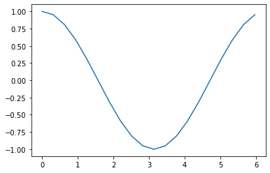
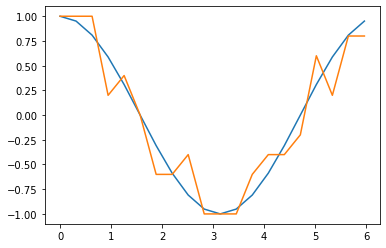
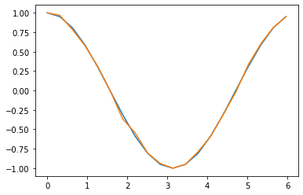
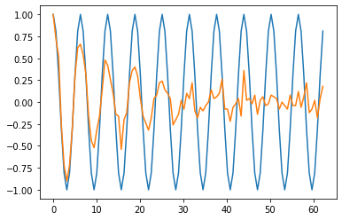

[1]:
#!pip install qulacs
#!pip install matplotlib
#!pip install numpy
#!pip install scipy
from utility import *
[2]:
import matplotlib.pyplot as plt
import numpy as np
import time
import random
from qulacs import QuantumState
from qulacs import QuantumCircuit
from qulacs.gate import DenseMatrix
from qulacs.circuit import QuantumCircuitOptimizer
ラムゼイ干渉をプロットする¶
期待値の直接計算とサンプリングによる計算
パラメータ付き回路の取り扱い
ノイズの影響の観察（ノイズのサンプリングには時間がかかる！）
直接期待値を計算する¶
[5]:
nqubits = 1
#状態の確保
state = QuantumState(nqubits)
#オブザーバブルの定義
measurement = Observable(nqubits)
measurement.add_operator(1.0,"Z 0")
#回転角を定義
theta = np.pi/4
#量子演算を作用
H(0).update_quantum_state(state)
RZ(0,theta).update_quantum_state(state)
H(0).update_quantum_state(state)
#期待値の計算
measurement.get_expectation_value(state)
[5]:
0.7071067811865471
\(\theta\)を与えると期待値を計算する関数を定義する
[7]:
def Ramsay_direct(theta):
#状態の確保
nqubits = 1
state = QuantumState(nqubits)
#オブザーバブルの定義
measurement = Observable(nqubits)
measurement.add_operator(1.0,"Z 0")
#量子演算を作用
H(0).update_quantum_state(state)
RZ(0,theta).update_quantum_state(state)
H(0).update_quantum_state(state)
#期待値の計算
return measurement.get_expectation_value(state)
[31]:
num = 20
angles = [2*np.pi*i/num for i in range(num)]
result = [Ramsay_direct(ang) for ang in angles]
plt.plot(angles,result)
plt.show()

サンプリングで期待値を推定する¶
[24]:
nqubits = 1
#状態の確保
state = QuantumState(nqubits)
#回転角を定義
theta = np.pi/4
#量子演算を作用
H(0).update_quantum_state(state)
RZ(0,theta).update_quantum_state(state)
H(0).update_quantum_state(state)
#サンプリング結果を取得
shots = 10
res = state.sampling(shots)
print(res)
shots = 1000
res = state.sampling(shots)
#平均値の計算
average_value = 0
for i in range(shots):
average_value += (-2*res[i]+1)/shots #0,1変数を+1,-1に変換したければ -2x+1
print(average_value)
[0, 0, 1, 0, 0, 0, 0, 0, 0, 1]
0.7200000000000005
サンプリングによる期待値推定の関数を定義する
[25]:
def Ramsay_sampling(theta,shots):
nqubits = 1
#状態の確保
state = QuantumState(nqubits)
#量子演算を作用
H(0).update_quantum_state(state)
RZ(0,theta).update_quantum_state(state)
H(0).update_quantum_state(state)
#サンプリング結果を取得
res = state.sampling(shots)
#平均値の計算
average_value = 0
for i in range(shots):
average_value += (-2*res[i]+1)/shots #0,1変数を+1,-1に変換したければ -2x+1
return average_value
[27]:
Ramsay_sampling(np.pi/4,10000)
[27]:
0.7137999999999377
期待値の直接計算とサンプリングを比較しておこう
[35]:
num = 20
shots = 10
angles = [2*np.pi*i/num for i in range(num)]
result1 = [Ramsay_direct(ang) for ang in angles]
result2 = [Ramsay_sampling(ang,shots) for ang in angles]
plt.plot(angles,result1)
plt.plot(angles,result2)
plt.show()

[36]:
num = 20
shots = 1000
angles = [2*np.pi*i/num for i in range(num)]
result1 = [Ramsay_direct(ang) for ang in angles]
result2 = [Ramsay_sampling(ang,shots) for ang in angles]
plt.plot(angles,result1)
plt.plot(angles,result2)
plt.show()

ノイズありのラムゼイ干渉¶
サンプリングによる統計誤差に加えて、操作におけるノイズをいれてみる。位相回転演算では、回転角\(\theta\) に依存して実行時間がかかると考えて、微小回転 delta_theta ごとに delta_gamma の確率で位相緩和を入れることにする。
[46]:
def noisy_Ramsay_sampling(theta,shots):
delta_theta = 0.1*np.pi
delta_gamma = 0.01
nqubits = 1
#平均値の計算
average_value = 0
#ノイズのインスタンスは毎回変わるべきなので1回のサンプリングをshots回繰り返す必要がある
for k in range(shots):
#状態の確保
state = QuantumState(nqubits)
num_rotations = int(theta/delta_theta)
#量子演算を作用
H(0).update_quantum_state(state)
# delta_theta の回転を num_rotations 回繰り返す
for i in range(num_rotations):
RZ(0,delta_theta).update_quantum_state(state)
#確率 delta_gammaでパウリZを作用させて位相を反転する（位相緩和ノイズ）
if random.random() < delta_gamma:
Z(0).update_quantum_state(state)
H(0).update_quantum_state(state)
#1つだけサンプリング結果を取得
res = state.sampling(1)
average_value += (-2*res[0]+1)/shots #0,1変数を+1,-1に変換したければ -2x+1
return average_value
[45]:
num = 10
shots = 100
angles = [2*np.pi*i/num for i in range(10*num)]
result1 = [Ramsay_direct(ang) for ang in angles]
result2 = [noisy_Ramsay_sampling(ang,shots) for ang in angles]
plt.plot(angles,result1)
plt.plot(angles,result2)
plt.show()

[ ]: